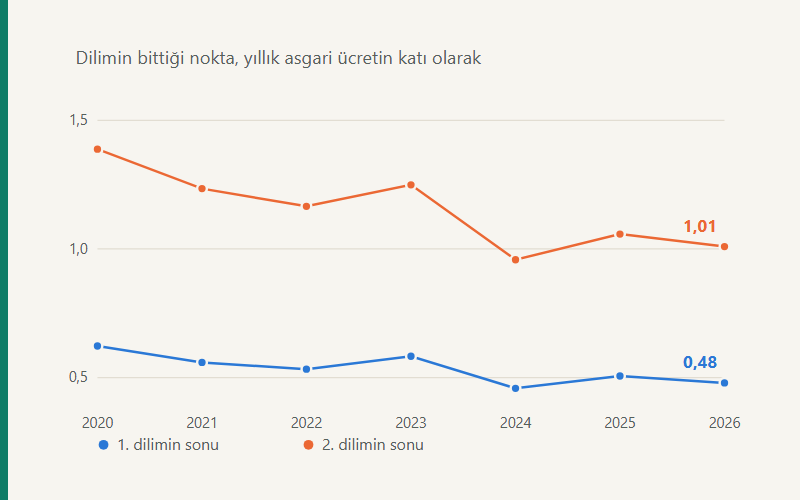

Kısa cevap
Asgari ücret ile gelir vergisi dilimleri farklı mekanizmalarla belirleniyor: biri komisyon kararıyla, diğeri yeniden değerleme oranıyla. İkisi aynı hızda artmadığı için dilimler asgari ücrete göre sürekli geriliyor. İlk dilim 2020'de yıllık brüt asgari ücretin 0,62 katında bitiyordu; 2026'da 0,48 katında bitiyor. İkinci dilim aynı sürede 1,39 kattan 1,01 kata indi — yani bugün yıllık asgari ücretin yaklaşık bir katını kazanan biri, ikinci dilimi bitirmiş oluyor.
Düzeltme (15 Eylül 2026). Bu yazının ilk hâli ilk dilim eşiğiyle açılıyordu. Sayılar doğruydu ama yüklediği anlam yanlıştı: asgari ücret istisnası aynı tarifeyle hesaplanıp hesaplanan vergiden düşüldüğü için, asgari ücretin yıllık matrahının altında kalan bir eşikteki değişiklik asgari ücret üstü hiçbir çalışanın vergisini değiştirmiyor — yaklaşık olarak değil, tam olarak sıfır. İlk eşik 2020–2026’nın her yılında o nötr bölgede kaldı. Ücretliler bakımından bağlayıcı olan ilk eşik %20 diliminin üst sınırı. Kanıtı ve sayısal sınaması: Endekslemenin aritmetiği.
Dilimleri liraya değil, asgari ücrete göre ölçmek
"İlk dilim 190.000 TL'de bitiyor" cümlesi tek başına bir şey söylemiyor, çünkü liranın kendisi her yıl başka bir şey. Dilimin nerede bittiğini anlamlı kılan ölçü, o yılın asgari ücreti. Aynı tabloyu bu ölçüyle kurunca eğilim görünür hâle geliyor.
| Yıl | Yıllık asgari ücret (brüt) | 1. dilimin sonu | Asgarinin katı | 2. dilimin sonu | Asgarinin katı |
|---|---|---|---|---|---|
| 2020 | 35.316 | 22.000 | 0,62 | 49.000 | 1,39 |
| 2021 | 42.930 | 24.000 | 0,56 | 53.000 | 1,23 |
| 2022 | 60.048 | 32.000 | 0,53 | 70.000 | 1,17 |
| 2023 | 120.096 | 70.000 | 0,58 | 150.000 | 1,25 |
| 2024 | 240.030 | 110.000 | 0,46 | 230.000 | 0,96 |
| 2025 | 312.066 | 158.000 | 0,51 | 330.000 | 1,06 |
| 2026 | 396.360 | 190.000 | 0,48 | 400.000 | 1,01 |
Sağdaki iki sütun yedi yılda aşağı iniyor. İlk dilim sütunu bir göstergedir, bir yük değil: yukarıdaki düzeltmede anlatıldığı gibi o eşik ücretlinin vergisini etkilemiyor. Bağlayıcı olan ikinci sütun. 2024'teki sert düşüş dikkat çekici: o yıl asgari ücret bir önceki yıla göre iki katına çıkarken dilimler aynı oranda artmadı ve ikinci dilim ilk kez yıllık asgari ücretin altına düştü (0,96 kat).
Fark nerede görünüyor: Aralık maaşında
Gelir vergisi kümülatiftir: yıl boyunca biriken matrah bir dilimi aştığında sonraki ayların vergisi artar, net maaş düşer. Dilimler asgari ücrete göre geride kaldıkça aynı katta maaş alan biri o eşiğe her yıl daha erken varıyor. Aşağıdaki tablo, Aralık netinin Ocak netine göre kaybını gösteriyor.
| Yıl | Asgarinin 3 katı | Asgarinin 5 katı |
|---|---|---|
| 2020 | %13,79 | %13,97 |
| 2021 | %13,79 | %13,97 |
| 2022 | %9,27 | %13,44 |
| 2023 | %8,91 | %10,97 |
| 2024 | %11,56 | %21,77 |
| 2025 | %11,56 | %21,77 |
| 2026 | %11,56 | %21,77 |
Asgari ücretin beş katı kazanan biri için kayıp 2020'de %13,97 iken 2024'te %21,77'ye çıktı ve orada kaldı. Üç katı kazananda eğilim düz: dilimlerin konumuna göre inip çıkıyor. Yani dilim kayması herkesi aynı biçimde vurmuyor — en sert etkilediği yer, ikinci ve üçüncü dilimin sınırındaki maaşlar.
Bu mekanizmanın kendisini ayrıntılı anlatan bir yazı var: Maaşım neden düştü? Buradaki tablo onun yıllar içindeki seyri.
Asgari ücretli bundan etkilenmiyor
Önemli bir ayrım — ve tarihi var. 2022’den itibaren yürürlükteki asgari ücret istisnası, asgari ücrete isabet eden gelir vergisini tamamen karşılıyor: asgari ücretlinin ödediği gelir vergisi yıl boyunca sıfır ve dilim ne kadar geride kalırsa kalsın onun netini değiştirmiyor.
2020 ve 2021’de durum farklıydı. O yıllarda asgari geçim indirimi (AGİ) rejimi vardı ve vergiyi azaltıyordu ama silmiyordu: asgari ücretli 2020’de yıl boyunca 2.255 TL, 2021’de 2.254 TL gelir vergisi ödüyordu. Yani dilim kayması o dönemde asgari ücretliyi de ilgilendiriyordu.
Dolayısıyla dilim kayması bir "asgari ücret sorunu" değil; asgari ücretin üzerinde kazananların sorunu. Ve istisna asgari ücrete bağlı olduğu için, asgari ücret her arttığında istisna da artıyor; bu da üst gelirlilerin netine küçük bir katkı yapıyor.
Yıllara göre asgari ücret
Yukarıdaki hesapların dayandığı temel veri. 2022 ve 2023'te asgari ücret yıl ortasında da zamlandığı için o yıllar iki dönem hâlinde veriliyor.
| Dönem | Brüt | Net |
|---|---|---|
| 2020 | 2.943 | 2.325 |
| 2021 | 3.578 | 2.826 |
| 2022 Ocak–Haziran | 5.004 | 4.253 |
| 2022 Temmuz–Aralık | 6.471 | 5.500 |
| 2023 Ocak–Haziran | 10.008 | 8.507 |
| 2023 Temmuz–Aralık | 13.415 | 11.402 |
| 2024 | 20.003 | 17.002 |
| 2025 | 26.006 | 22.105 |
| 2026 | 33.030 | 28.076 |
Kaynaklar ve güncelleme
Bu yazı en son 14 Eylül 2026 tarihinde gözden geçirildi. Tablolardaki hiçbir sayı elle yazılmadı: hepsi sitenin bordro motorundaki yıllık parametrelerden üretiliyor ve her değişiklikte testlerle yeniden doğrulanıyor. 2027 dilimleri açıklandığında yazı güncellenecek.
- 193 sayılı Gelir Vergisi Kanunu, madde 103 (tarife) ve 23/18 (asgari ücret istisnası) — Mevzuat Bilgi Sistemi
- Yıllık parametreler ve metodoloji — Bordro motoru
- Hesap yöntemi ve testler — hesap-cekirdegi
Sık sorulan sorular
Vergi dilimleri neden asgari ücrete yetişemiyor?
İkisi farklı mekanizmalarla belirleniyor. Asgari ücret komisyon kararıyla, vergi dilimleri yeniden değerleme oranıyla artıyor. 2020'den 2026'ya asgari ücret 11,22 katına çıkarken ilk dilim 8,64, ikinci dilim 8,16 katına çıktı.
Bu benim maaşımı nasıl etkiliyor?
Aynı katta maaş alan biri yıl içinde daha erken üst dilime geçiyor. Asgari ücretin beş katı kazanan birinin Aralık neti, Ocak netinin 2020'de %13,97 altındaydı; 2026'da %21,77 altında.
Asgari ücretli bundan etkileniyor mu?
2022’den itibaren hayır: asgari ücret istisnası gelir vergisini tamamen karşılıyor ve ödenen gelir vergisi yıl boyunca sıfır. 2020 ve 2021’de ise AGİ rejimi vardı; asgari ücretli sırasıyla 2.255 TL ve 2.254 TL gelir vergisi ödüyordu.
İlk vergi dilimi 2026'da nerede bitiyor?
190.000 TL yıllık kümülatif matrahta — 2026 yıllık brüt asgari ücretinin 0,48 katı; 2020’de 0,62 idi. Ancak bu eşik asgari ücret üstü ücretliler için bağlayıcı değil: değiştirilmesi vergilerini etkilemiyor.
İlgili araçlar ve yazılar
- Brüt Net Maaş Hesaplama — kendi maaşınızın ay ay dökümü
- Maaşım neden düştü? — dilim etkisinin mekanizması
- Vergi kaması — ücretin işverene maliyeti ile net arasındaki fark
- Bordro motoru — 2020–2026 parametreleri ve metodoloji